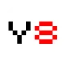

Onlıne para oyun sıtelerının sıralaması
İş ve para ile ilgili en iyi flash oyun sitelerini keşfedin! Güvenilir platformlar, kapsamlı incelemeler ve kullanıcı yorumları sayesinde, sizin için para kazanmakla ilgili en iyi flash oyun sitelerinin bir sıralamasını derledik.
Bız Kımız?
Online Oyunları Araştırma ve Değerlendirme Ekibi
Kendini en iyi çevrimiçi oyunları bulmaya ve incelemeye adamış bir ekibiz. Amacımız, kullanıcılarımızı eğlenceli ve heyecan verici oyunlar sunan platformlarla tanıştırmaktır. Oyunları, kullanıcı yorumlarını ve derecelendirmelerini analiz ederek, güvenilir ve keyifli bir deneyim sunmayı amaçlıyoruz.
Lıste sıtelerı hakkında açıklama
Liste Siteleri Nedir? Popüler Liste Siteleri Hakkında Bilgi
Açıklama: Listelenen siteler, belirli bir bölgedeki günlükleri temizleyenleri kolayca sunan platformlardır. Popüler liste siteleri, müşterilerinin özelliklerinin hızlı ve eğlenceli bir şekilde saklanmasını sağlar. Bu yazıda en iyi liste sitelerini ve özellikleri.
masa
| site | derecelendirme | açıklama | yorumlar | mobil versiyon | bonus | bayrak |
|
Yandex Oyunları |
Yandex'in diğer hizmetleriyle kolay entegrasyona sahip geniş oyun yelpazesi. | 289 | Evet | Ekosistem | ||
|

Y8 |
Büyük klasik flash oyun arşivi, ancak bazı oyunlar eskimiş durumda. | 150 | Hayır | Arşiv | ||
|
Crazy Games |
Her zevke hitap eden geniş oyun seçenekleri, hızlı yükleme ve kayıtsız oynama kolaylığı. | 285 | Evet | Çeşitlilik | ||
|
Kongregate |
Geliştiricilere destek veren ve benzersiz oyun mücadeleleri sunan bir site. | 204 | Evet | Topluluk | ||
|
Poki |
Basit navigasyon ve mobil sürüme odaklanan geniş oyun seçenekleri. | 144 | Evet | Kolaylık |
Neden Bızı Seçmelısınız?
Soru - Cevap
popüler oyun
Hırsız Kardeşler
iki hırsız kardeşin birlikte hazine topladığı bir bulmaca oyunudur. Oyuncu, karakterler arasında geçiş yaparak engelleri aşar ve seviyeleri tamamlar.

Bırleşık Krallık
oyuncunun krallığını düşmanlardan koruyan bir kralı yönettiği bir flaş oyunudur. Oyuncu, krallığını savunmak için kalesini güçlendirir, ordusunu geliştirir ve çeşitli düşmanlarla savaşır.
Mılyoner Testı
bilgi yarışması oyunudur; oyuncu soruları cevaplayarak sanal para kazanır ve milyoner olmaya çalışır.
Mükemmel Otelım
oyuncunun oteli yönettiği, geliştirdiği ve müşteriler için mükemmel hale getirmeye çalıştığı bir oyun.
Tavsıye
1Tavsıye
Mekanikleri ve kuralları öğrenin — oyuna dalmadan önce, kontrolleri ve oyun süreçlerinin özelliklerini anlamak için birkaç dakika ayırın. Bu, daha hızlı uyum sağlamanıza ve gereksiz hatalardan kaçınmanıza yardımcı olacaktır.
2Tavsıye
Molaları kullanın — flash oyunlar genellikle kısa seviyeleri içerir. Bunları küçük molalar vermek için kullanın ve özellikle dikkat ve tepki gerektiren oyunlarda aşırı yüklenmekten kaçının.
3Tavsıye
İdeale değil, ilerlemeye odaklanın — seviyeleri mükemmel bir şekilde geçme çabası içinde olmayın. Yeteneklerinizi geliştirmeye ve oyundaki ilerlemenize odaklanın; pratik, her yeni girişte daha iyi sonuçlar almanıza yardımcı olacaktır.
Haberler
Cyberpunk 2077: Phantom Liberty güncellemesi yeni görevler ve karakterler ekliyor.Bekleniyor ki bu yeni güncelleme oyunun içeriğini önemli ölçüde genişletecek ve oyun deneyimini iyileştirecek, ayrıca yeni mekanikler sunarak önceki oyuncuları geri çekebilir.
yaygın hatalar
Kontrolleri göz ardı etme — birçok oyuncu, oyunun kontrollerini ve mekaniklerini öğrenmek için zaman harcamaz, bu da yanlış anlamalara ve yönetim hatalarına yol açar.
İdeale ulaşma çabası — seviyeleri hatasız geçme çabası hayal kırıklığına yol açabilir. Yeteneklerinizi geliştirmeye ve ilerlemeye odaklanmak daha iyidir.
Çevreye dikkat etmeme — bazı oyunlarda çevre detaylarına dikkat etmek, seviyeleri geçmek veya tuzaklardan kaçmak için önemlidir.
Aşırı yorgunluk — çok uzun oyun seansları yorgunluğa yol açabilir ve konsantrasyonu düşürerek sonuçların kötüleşmesine ve yanlış kararlar alınmasına neden olabilir.
Yanlış strateji — birçok oyuncu farklı yaklaşımlarla deneme yapmaz, bu da daha zorlu seviyelerin geçilmesini zorlaştırabilir.
Molaları göz ardı etme — molaları unutmak yorgunluğa ve oyuna olan ilginin azalmasına neden olabilir.
Molaları göz ardı etme — molaları unutmak yorgunluğa ve oyuna olan ilginin azalmasına neden olabilir.
Eğitim ve ipuçlarını göz ardı etme — birçok flash oyun, oyunu daha iyi anlamanıza yardımcı olabilecek eğitim görevleri veya ipuçları sunar, ancak oyuncular genellikle bunları atlar.
Uyum sağlama eksikliği — oyunun değişen koşullarına ve farklı mekaniklerine uyum sağlayamamak, seviyelerin geçilmesini zorlaştırabilir.
Zamanlama sorunları — belirli eylemler için, örneğin atlama veya saldırma, doğru zamanlama yapamamak başarısızlıklara yol açabilir.
avantajlar onlıne oyunlar
Stratejik düşünme ve problem çözme becerilerinin gelişimi — birçok çevrimiçi oyun, planlama ve strateji gerektirir. Oyuncular, belirli hedeflere ulaşmak için akıl yürütme, problem çözme ve hızlı karar alma yeteneklerini kullanır ve geliştirir. Bu da özellikle gençlerde bilişsel yetenekleri ve ileriye dönük düşünme becerilerini artırır. Zamanla stratejik düşünme, günlük hayattaki sorunları çözmede de kullanılabilir hale gelir.
Takım çalışması ve sosyal etkileşim — çevrimiçi oyunlar, diğer oyuncularla iş birliği yapma fırsatı sunar. Birçok oyunda takım olarak hareket etmek, ortak stratejiler geliştirmek ve görevleri birlikte tamamlamak gerekir. Bu durum, oyuncuların iletişim ve ekip çalışması becerilerini geliştirir. Çevrimiçi oyunlar, ayrıca dünyanın dört bir yanından insanlarla tanışarak farklı kültürlerden insanları anlama fırsatı da sağlar.
Tepki süresi ve konsantrasyonun gelişimi — hızlı tepki ve yüksek dikkat gerektiren oyunlar, oyuncuların reflekslerini ve konsantrasyonlarını güçlendirir. Özellikle aksiyon ve macera oyunları, göz-el koordinasyonunu geliştirir ve oyuncuların ani değişikliklere hızla tepki verebilme becerisini artırır. Bu yetenekler, günlük yaşamda da hızlı karar verme gerektiren durumlarda faydalı olabilir.
Eğlence ve stres azaltma — oyunlar, günlük yaşamın stres ve kaygılarından uzaklaşmak için harika bir yol sunar. Eğlenceli vakit geçirme ve başarı hissi, ruh halini iyileştirir ve zihinsel rahatlama sağlar. Ayrıca, yaratıcı ve hayal gücüne dayalı oyunlar, oyuncuların kendilerini ifade etmesine olanak tanıyarak, psikolojik olarak yenilenmelerine yardımcı olur.
Gerıbıldırım
joy
Siteyi ilk defa ziyaret ettim ve oyun incelemeleri gerçekten çok kaliteli. Özellikle, her oyunun artı ve eksilerinin net bir şekilde belirtilmesi karar vermemi kolaylaştırdı. Arkadaşlarıma da tavsiye ettim!
Ömer
Harika bir site! Sayenizde oynamak istediğim oyunları daha kolay bulabiliyorum. Detaylı incelemeler ve kullanıcı yorumları sayesinde hangi oyunun bana uygun olduğunu hızlıca anlayabiliyorum. Teşekkürler!
Max
Farklı online oyunlar ararken bu siteyi keşfettim. Oyunların kategorilere ayrılmış olması çok işime yarıyor. Ayrıca, oynanabilirlik ve grafikler hakkında verilen bilgiler çok yardımcı oluyor. Kesinlikle öneririm!
Size güncel incelemeler ve haberler sunmak için en iyi oyun sitelerini özenle seçiyoruz. Ekibimiz ve nasıl çalıştığımız hakkında daha fazla bilgi edinmek için 'Daha Fazla Oku' butonuna tıklayın.
Pekı web sıtemıze nasıl kayıt olunur?
Sitemizdeki basit ve sezgisel kayıt süreci, hızlı bir şekilde oynamaya ve bonus almaya başlamanızı sağlar. En iyi oyun sitelerinden birini seçin, kaydolun ve güncel haberlere, incelemelere ve özel tekliflere erişin. Ortaklarımızdan gelen kolaylık ve avantajların tadını çıkarın!
En iyi oyun sitesini seçin, oyunların tadını çıkarın ve bonuslar kazanın!
Sadece birkaç tıklamayla topluluğumuza katılın. Kaydolun, güncel kalın, en sevdiğiniz oyunları oynayın ve özel teklifleri keşfedin!